")
Die Benutzung des Assistenten eignet sich besonders, um Öffnungen in einschaligen Wänden zu zeichnen. Öffnet den Dialog Fensterassistent.
Um eine Öffnung einzufügen
§Wählen Sie im Dialog Fensterassistent die gewünschten Angaben und bestätigen Sie mit OK.
Siehe Dialogbeschreibung weiter unten. Wenn Sie die Öffnung mit Anschlag einsetzen möchten, setzen Sie einen Haken bei der Funktion mit Anschlag und geben Sie anschließend die Anschlagbreite- und tiefe ein.
§Um die Fensterlänge zu bestimmen, klicken Sie im Funktionsbereich auf die Schaltfläche [Länge ...].
Der Dialog Fenster wird geöffnet.
§Geben Sie im Dialog die gewünschte Fensterlänge in Metern ein und bestätigen Sie mit OK.
Der Dialog wird geschlossen. Im Vorschaufenster (Funktionsbereich) werden die Linien und einer der beiden Hilfspunkte als "Einfügepunkt" angezeigt.
§Mit den Funktionen [Klappe] und [PuWech] können Sie die Ausrichtung und Lage des Einfügepunktes bestimmen.
Im Vorschaufenster |
Klappe |
PuWech (Punkt wechseln) |
|---|---|---|
|
Spiegelt die Öffnung. |
Wechselt den Punkt auf die gegenüberliegenden Seite. |
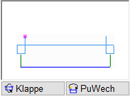 |
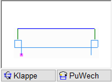 |
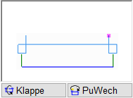 |
Das Klappen und Wechseln des Punktes können Sie beliebig kombinieren. Um ggf. eine Korrektur zu vermeiden, geben Sie die Ausrichtung vor der Abfrage [Abstand] an. |
||
§Klicken Sie die Linie an, auf die der Einfügepunkt gesetzt werden soll. [auf welche Linie].
Im Vorschaubereich wird die Öffnung in dem Winkel angezeigt, der aus der angeklickten Linie ermittelt wurde. Der Maßstab wird ebenfalls aus der Bezugslinie übernommen.
§Klicken Sie einen Punkt (Orientierungspunkt) an, von dem der Abstand gemessen werden soll. [von welchem Punkt].
§Geben Sie den Abstand zum Orientierungspunkt ein und bestätigen Sie mit der Eingabetaste. [Abstand].
Die Öffnung wird eingefügt.
Beispiel 1
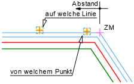 |
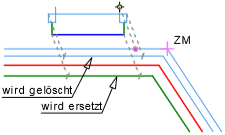 |
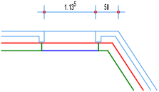 |
|
Ergebnis |
|
§Klicken Sie die Bezugslinie und den Einfügepunkt an. [auf welche Linie]; [von welchem Punkt]. §Verwenden Sie PuWech, um den Einfügepunkt der Öffnung auf die rechte Seite zu bringen. §Geben Sie einen Abstand, z. B. .5 (=0,5m), ein. [Abstand]. |
||
Beispiel 2
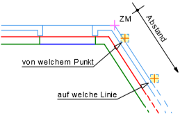 |
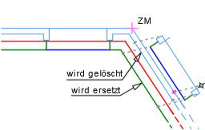 |
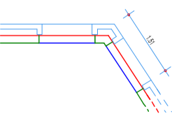 |
|
Ergebnis |
|
§Verwenden Sie Klappe und/oder PuWech, um den Einfügepunkt auf der rechten Außenseite zu platzieren. |
||
Beispiel 3
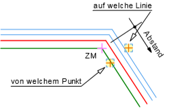 |
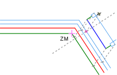 |
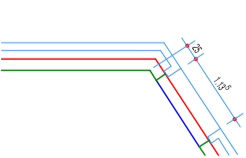 |
§Verwenden Sie Klappe und/oder PuWech, um den Einfügepunkt auf der linken Außenseite zu platzieren. |
||
Optionen im Dialog "Fensterassistent"
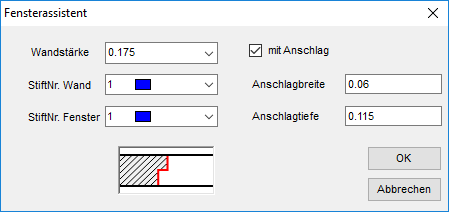 |
Wandstärke
Angabe der Wanddicke.
StiftNr. Wand
Angabe der Stiftfarbe für die Wand.
StiftNr. Fenster
Angabe der Stiftfarbe für das Fenster.
|
Tipp: |
|
Wählen Sie für StiftNr. Wand den gleichen Stift für die Leibung, der auch bei der Wand benutzt wurde. Der Stift im Auswahlfeld StiftNr. Fenster wird für das Zeichnen der Linien zwischen den Leibungen benutzt. Es sollte sich im Allgemeinen vom Stift der Wand unterscheiden, üblicherweise wird ein Stift mit dünnerer Linie verwendet. |

mit Anschlag
Hinzufügen eines Anschlags. Setzen Sie in der Checkbox einen Haken, um die Optionen Anschlagbreite und- tiefe zu aktivieren.
Anschlagbreite
Angabe der Breite.
Anschlagtiefe
Angabe der Tiefe.

Die Änderungen werden übernommen und der Dialog geschlossen. Das Fenster wird im Vorschaubereich angezeigt.

Alle Änderungen werden verworfen und der Dialog geschlossen.